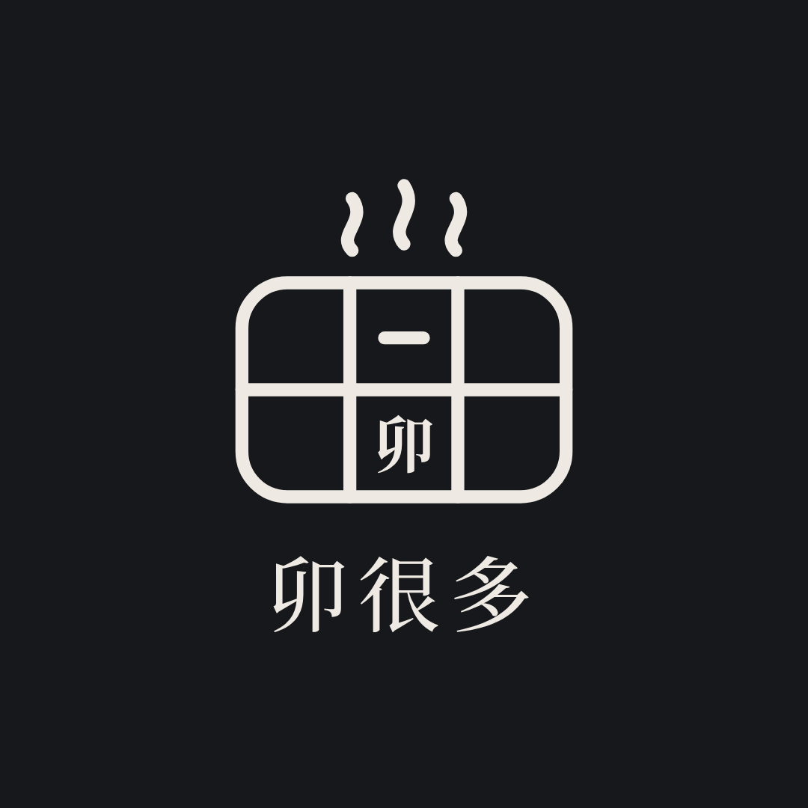
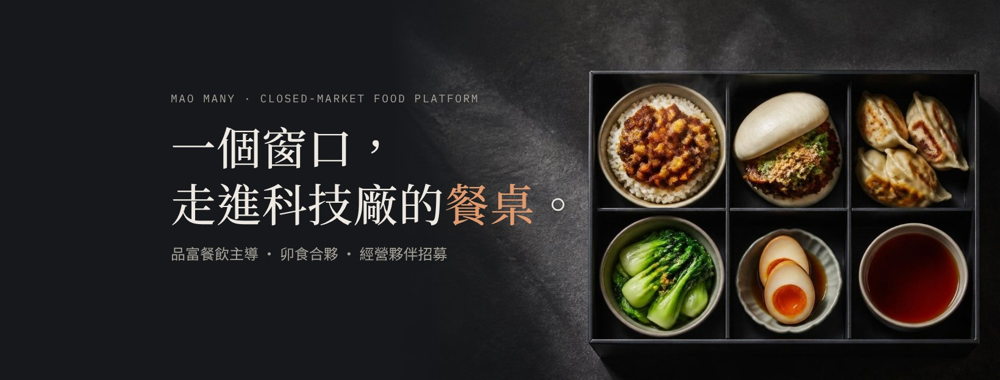

個人預購自取
- 限動「明日菜單開放預購」
- 點連結進快取GO 預購
- 截單後換算備料量
- 尖峰走預訂取餐區
追蹤：預購占比、各貼文帶來的訂單數。
MAO MANY · Social Commerce Kit · 質感版
同一組帳號跑兩條內容線：商品線讓人看見每一道菜，招商線讓想加入的人看見條件與系統。視覺與質感版官網一致：石墨底、襯線標題、等寬數據。
01 · Accounts
Threads 以 IG 帳號開通，名稱與 IG 相同。三平台 ID 建議統一為 maomany.partner；被使用時改 maomany_partner。
| 項目 | Facebook 粉絲專頁 | Threads | |
|---|---|---|---|
| 名稱 | 卯很多 MAO MANY｜封閉市場餐飲平台 | 卯很多 MAO MANY | 同 IG |
| 簡介 | |||
| 大頭貼／封面 | avatar.png；精選 6 個封面 | avatar.png；fb-cover.jpg（1640×624） | avatar.png |
| 按鈕與連結 | 官網、LINE 加好友 | 「傳送訊息」；網站填官網 | 官網 |
02 · Preview
IG 網格依 01 到 09 排列；最新貼文排在左上角，所以首發要倒序發，先發 09、最後發 01。


SKU 規格貼、六格品牌輪播、明日預購限動。對消費者是菜單，對想加盟的人是「你將販售的商品」。
套餐階梯、食安清單、開辦預算、三天見習。一律導向官網試算與 LINE。
03 · Launch Grid
每張圖附 IG 與 Facebook 兩種文案，按鈕直接複製。
04 · Brand Carousel
7 張一組：封面＋六個品牌各一張。
05 · Stories & Highlights
「明日預購」每天更新截單與取餐時間；「見習梯次」每週更新。精選封面只顯示中間圓形。
06 · Commerce Flows
三條商務流程都從社群起點、以 LINE 或快取GO 收單，數字回到 POS，讓每一則貼文的成效可以被量。
追蹤：預購占比、各貼文帶來的訂單數。
追蹤：團訂筆數、平均份數、回購率。
追蹤：加 LINE 數、見習預約數、洽談數。
07 · 4-Week Plan
以 2026 年 10 月 19 日（一）為第 1 天。每週 IG 3–5 則、Facebook 3 則、Threads 5 則、限動每天。
| 日期 | 平台 | 內容 |
|---|
08 · Rules